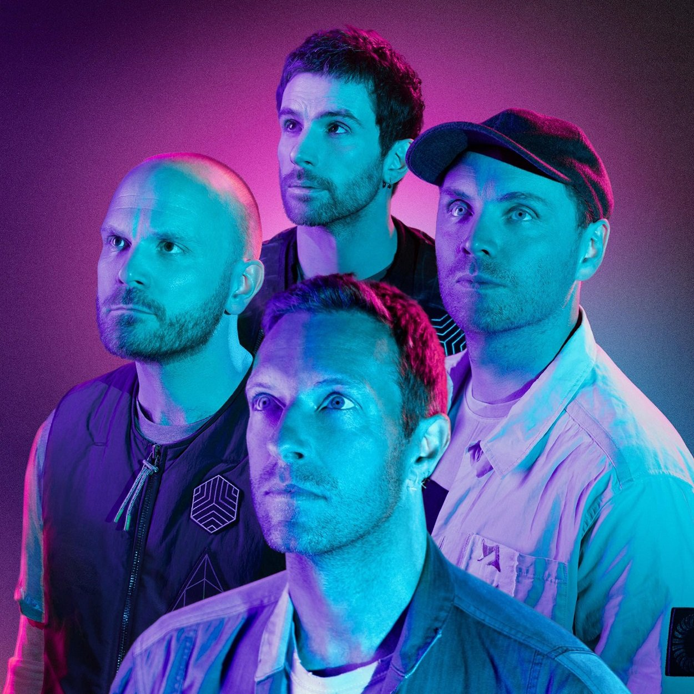
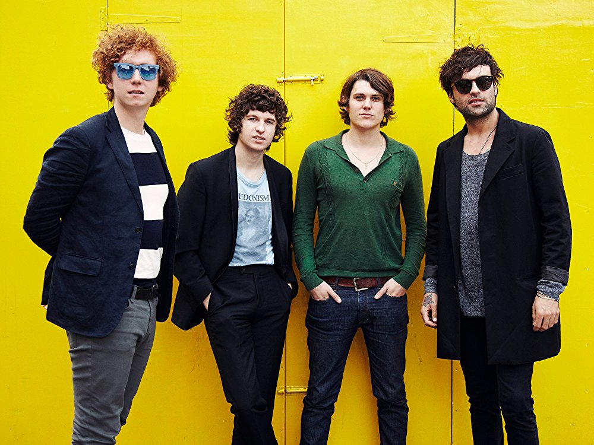

Música Indie
El término indie proviene del inglés independent -independiente en
español- y se refiere en general a cualquiera de los géneros, panoramas,
subculturas y atributos estilísticos y culturales, con un acercamiento
autónomo y un nivel de planteamiento que se reduce al lema "hazlo tú
mismo".
El término Indie se suele usar (aunque no correctamente) para referirse
a un sonido nuevo que un músico presenta. Si se interpreta de manera más
literal, está ligado a las condiciones de producción y circulación de su
obra.
El término Indie se relaciona con la actitud del «hazlo tu mismo» y la
capacidad de trabajar fuera de las lógicas de las compañías y
corporaciones de la industria cultural. También se suele mencionar como
Indie a aquellos grupos que están empezando a tocar y no tienen contrato
con un sello discográfico; es decir, que solo tocan en fiestas, pubs,
etc. y no refiriendose a ellos como un genero.
Grupos

Arctic Monkeys

Arctic Monkeys es una banda inglesa de rock alternativo e indie rock
proveniente de High Green, un suburbio en las afueras de Sheffield,…
Radiohead

Radiohead es una agrupación británica (Oxford, Inglaterra) de rock
alternativo que surgió en el año de 1988 cuando un joven de nombre
Thom Yorke…
The Killers
Banda de Rock, originaria de Las Vegas, Estados Unidos. Formada en
2002 después de que Brandon Flowers viera un recital de Oasis en el
hotel Hard…
Franz Ferdinand

Franz Ferdinand es una banda de rock formada en Glasgow (Escocia) en
2001. El grupo escocés toma su nombre del archiduque austrohúngaro…
Coldplay

Coldplay es una banda británica de estilo Britpop/Rock alternativo.
Se formó en 1998, y es conocida por sus letras suaves e
introspectivas.
Bloc Party

Bloc Party es una banda de indie rock/Post-Punk formada en el Este
de Londres, Inglaterra en 1998. Su primer sencillo (She's Hearing
Voices) y un…
The Strokes

The Strokes es una banda de rock formada en Nueva York, Estados
Unidos por Julian Casablancas (vocalista y compositor), Nick Valensi
(guitarra…
Interpol

Interpol es una banda neoyorquina de Indie Rock formada en 1998. La
banda se encuentra actualmente formada por Paul Banks (vocalista,
guitarra),…
The Kooks

The Kooks es una banda de indie rock originaria de Brighton,
Inglaterra. Su álbum de debut, "Inside in Inside Out", permaneció la
mitad de 2006 en…